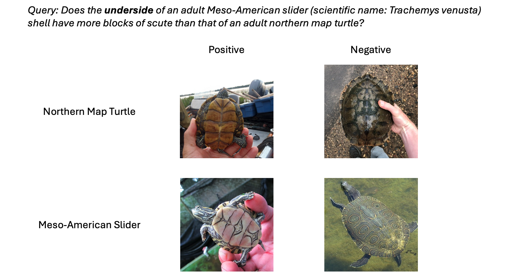

Visual-RAG-ME: A Challenging Benchmark


VisRet Improves Retrieval
Evaluation results across three T2I retrieval benchmarks using different retrieval strategies and retrievers. We use GPT-4o for T2I instruction generation and GPT-Image-1 for T2I generation. The best results in each column within each retriever group are boldfaced. R = Recall. N = NDCG.
VisRet Improves Downstream VQA
VQA performance comparison using different LVLMs as instruction generators for VisRet and query rephrase models. CLIP is used as the retriever. Boldfaced numbers indicate the best in each column.
BibTeX
@misc{wu2024synchronous,
title={Synchronous Faithfulness Monitoring for Trustworthy Retrieval-Augmented Generation},
author={Di Wu and Jia-Chen Gu and Fan Yin and Nanyun Peng and Kai-Wei Chang},
year={2024},
eprint={2406.13692},
archivePrefix={arXiv},
primaryClass={id='cs.CL' full_name='Computation and Language' is_active=True alt_name='cmp-lg' in_archive='cs' is_general=False description='Covers natural language processing. Roughly includes material in ACM Subject Class I.2.7. Note that work on artificial languages (programming languages, logics, formal systems) that does not explicitly address natural-language issues broadly construed (natural-language processing, computational linguistics, speech, text retrieval, etc.) is not appropriate for this area.'}
}